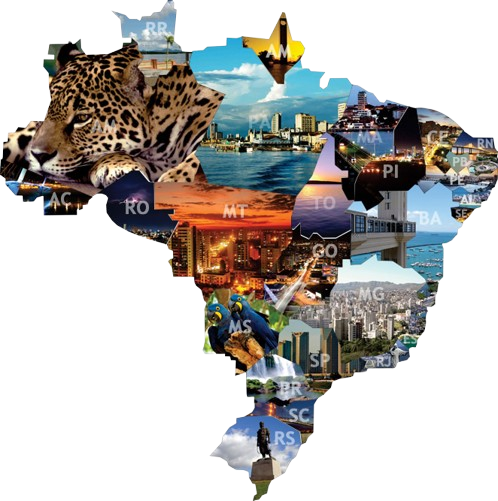
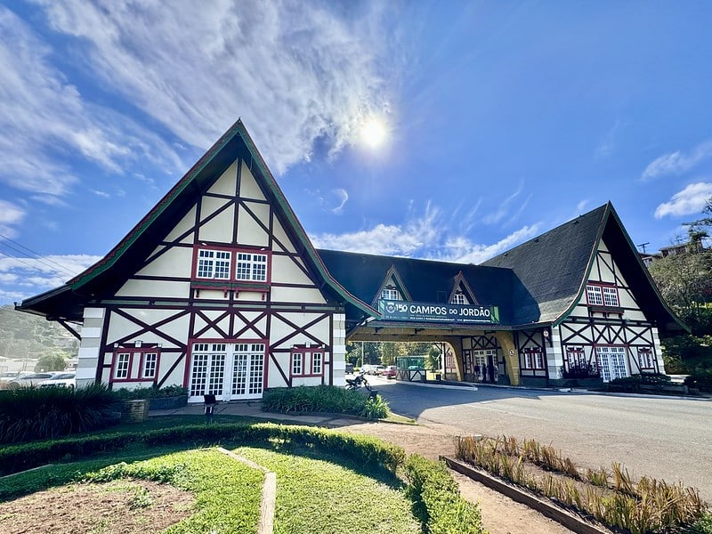
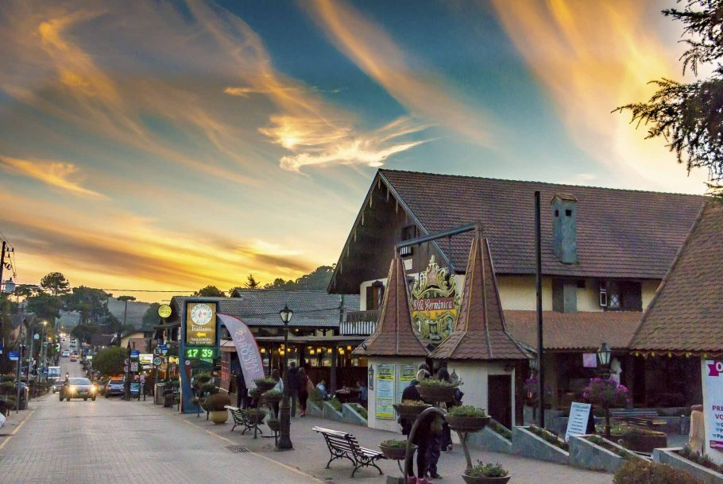

Ver Praias
Ver montanhas
CONHEÇA O TURISMO NO BRASIL

O Brasil é um dos destinos turísticos mais fascinantes do mundo, combinando natureza exuberante, cultura vibrante e uma hospitalidade que encanta qualquer viajante. De norte a sul, o país oferece experiências únicas para todos os gostos, desde praias paradisíacas até cidades históricas e paisagens selvagens.
Para quem ama sol e mar, o litoral brasileiro é um verdadeiro sonho. No Nordeste, destinos como Jericoacoara, Porto de Galinhas e Fernando de Noronha oferecem águas cristalinas e paisagens de tirar o fôlego. No Sudeste, o Rio de Janeiro e suas famosas praias, como Copacabana e Ipanema, garantem um cenário perfeito para quem busca diversão e beleza natural.
Os amantes da natureza encontram no Brasil um verdadeiro refúgio. A Amazônia, com sua floresta densa e biodiversidade impressionante, proporciona experiências únicas, como passeios de barco pelos rios e encontros com comunidades indígenas. O Pantanal, por sua vez, é um dos melhores lugares do mundo para observar a vida selvagem, com onças-pintadas, araras e jacarés.
As cidades históricas brasileiras são um prato cheio para quem gosta de cultura e arquitetura. Ouro Preto e Tiradentes, em Minas Gerais, encantam com suas igrejas barrocas e ruas de pedra. Salvador, com seu Pelourinho colorido e forte influência africana, é um mergulho na história e na música do Brasil.
Para os aventureiros, o Brasil é um playground natural. Trilhas na Chapada Diamantina, no Monte Roraima e na Chapada dos Veadeiros levam os viajantes a paisagens espetaculares. No sul, as cataratas do Iguaçu impressionam com sua grandiosidade, enquanto a Serra Gaúcha oferece montanhas e vinhedos perfeitos para um passeio romântico.
O Brasil também é um destino gastronômico de dar água na boca. O acarajé da Bahia, o churrasco do Rio Grande do Sul, o tacacá do Pará e a feijoada carioca são apenas alguns exemplos da culinária rica e variada que se espalha pelo país. Cada estado tem seus sabores únicos, prontos para surpreender o paladar dos visitantes.
A diversidade cultural brasileira se reflete em suas festas e celebrações. O Carnaval, com os desfiles do Rio de Janeiro e os blocos de rua de Salvador e Recife, é um dos maiores espetáculos do planeta. As festas juninas no Nordeste, com quadrilhas e comidas típicas, encantam turistas que buscam vivenciar tradições autênticas.
As metrópoles brasileiras também têm muito a oferecer. São Paulo, a maior cidade do país, é um polo cultural e gastronômico, com museus renomados, vida noturna agitada e uma cena gastronômica de nível internacional. Brasília, com sua arquitetura moderna assinada por Oscar Niemeyer, é uma aula de história e arte a céu aberto.
A hospitalidade brasileira é um dos maiores diferenciais do país. Seja em uma pousada no interior, em um resort à beira-mar ou em um hostel no centro da cidade, o turista sempre será recebido com um sorriso e um calor humano que tornam a experiência ainda mais especial.
A variedade de ecossistemas faz do Brasil um dos destinos mais procurados para o ecoturismo. No Jalapão, no Tocantins, os fervedouros e dunas douradas criam um cenário único. No Parque Nacional de Aparados da Serra, os cânions gigantes impressionam os visitantes que buscam contato com a natureza.
O Brasil também é um ótimo destino para o turismo religioso. O Santuário de Aparecida, em São Paulo, recebe milhões de fiéis todos os anos. O Círio de Nazaré, no Pará, é uma das maiores celebrações religiosas do mundo, reunindo milhares de devotos em uma emocionante procissão.
O turismo rural tem ganhado força no Brasil, oferecendo experiências autênticas no campo. Fazendas no interior de Minas Gerais, São Paulo e Rio Grande do Sul permitem aos turistas vivenciar a vida no campo, degustar produtos artesanais e relaxar em meio à natureza.
Os parques nacionais brasileiros são verdadeiros tesouros naturais. O Parque Nacional do Itatiaia, na divisa entre Rio de Janeiro e Minas Gerais, é um dos favoritos dos montanhistas. Já o Parque Nacional da Serra da Capivara, no Piauí, guarda pinturas rupestres com mais de 10 mil anos de história.
O litoral sul do Brasil também tem destinos encantadores. Florianópolis, conhecida como a "Ilha da Magia", combina praias deslumbrantes, trilhas e uma vida noturna animada. Bombinhas e Praia do Rosa, em Santa Catarina, são refúgios perfeitos para quem busca tranquilidade e contato com a natureza.
Os destinos de inverno também atraem milhares de turistas. Gramado e Canela, na Serra Gaúcha, se destacam com sua arquitetura europeia, gastronomia refinada e festivais sazonais, como o Natal Luz. Campos do Jordão, em São Paulo, é outro destino popular para quem busca frio e charme nas montanhas.
O Brasil também investe em turismo sustentável, promovendo iniciativas para preservar suas belezas naturais. Projetos como o Tamar, que protege tartarugas marinhas, e o Instituto Mamirauá, que atua na conservação da Amazônia, são exemplos de como é possível viajar de forma responsável.
O turismo de aventura cresce a cada ano no Brasil. Rafting em Brotas, escalada no Pico da Bandeira e mergulho em Bonito são experiências imperdíveis para os amantes de adrenalina. O país oferece opções para todos os níveis, desde iniciantes até aventureiros experientes.
O Brasil é um destino completo para casais em lua de mel. Búzios, com suas praias românticas, e Ilhabela, com suas cachoeiras escondidas, são escolhas perfeitas para quem busca momentos especiais a dois. Jericoacoara, com seu pôr do sol inesquecível, também é um dos destinos mais procurados por casais apaixonados.
O turismo no Brasil é uma jornada de descobertas e encantamento. Com paisagens incríveis, cultura rica e um povo acolhedor, cada viagem se torna uma experiência única e memorável. Seja qual for o seu estilo, há sempre um destino brasileiro pronto para surpreender você.
Então, arrume as malas e venha explorar esse país maravilhoso. O Brasil te espera de braços abertos!
PRAIAS
SP |
RJ |
SC
MONTANHAS

